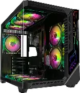
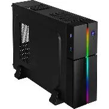

🖥️ PC Case - The Computer Chassis
The PC case houses all your computer components, providing protection, cooling, and a foundation for your build. A good case offers proper airflow, cable management, and compatibility with your components.
Key factors include size (determines what motherboard and components fit), airflow (keeps components cool), cooling support (fans and radiators), and cable management (keeps the build clean and organized).
Full Tower
Size: 600mm+ tall - Maximum space
Full tower cases offer the most space for components and cooling. They're designed for extreme builds with multiple GPUs, large radiators, and extensive storage. Full towers are for enthusiasts who need maximum expansion.
.webp)
| Size | 600mm+ tall |
|---|---|
| Motherboard Support | E-ATX, ATX, Micro-ATX |
| GPU Clearance | 400mm+ |
| Cooling | Excellent (multiple 360mm+ radiators) |
| Typical Use | Extreme gaming, workstation, servers |
| Advantages | Maximum space, best cooling |
| Limitations | Very large, heavy, expensive |
Mid Tower
Size: 450-550mm tall - Most popular size
Mid tower cases are the most common and versatile option. They offer ample space for most builds while keeping a manageable size. Mid towers fit most motherboards, GPUs, and cooling solutions, making them the go-to choice for most users.

| Size | 450-550mm tall |
|---|---|
| Motherboard Support | ATX, Micro-ATX, Mini-ITX |
| GPU Clearance | 300-400mm |
| Cooling | Good (360mm radiator support) |
| Typical Use | Gaming PCs, workstations |
| Advantages | Versatile, good value, widely available |
| Limitations | Limited for extreme builds |
Mini Tower
Size: 350-450mm tall - Compact but capable
Mini tower cases offer a smaller footprint while still supporting most standard components. They're great for space-conscious users who want a capable system without a huge case. These are popular for living room PCs and compact gaming rigs.
.webp)
| Size | 350-450mm tall |
|---|---|
| Motherboard Support | Micro-ATX, Mini-ITX |
| GPU Clearance | 250-320mm |
| Cooling | Limited (240mm radiator max) |
| Typical Use | Compact gaming, HTPC, office |
| Advantages | Compact, good for smaller spaces |
| Limitations | Limited GPU and cooling options |
Small Form Factor (SFF)
Size: Ultra-compact, under 20L volume
Small Form Factor cases are the ultimate in compactness. They're designed for mini-ITX motherboards and prioritize space efficiency. SFF builds are popular for minimalist setups, LAN parties, and portable systems, but require careful component selection.

| Size | Under 20L volume |
|---|---|
| Motherboard Support | Mini-ITX (usually) |
| GPU Clearance | Varies (often 300mm max) |
| Cooling | Limited (air cooling, small AIOs) |
| Typical Use | Minimalist builds, LAN parties, portability |
| Advantages | Very compact, stylish, portable |
| Limitations | Limited cooling, requires planning, expensive |